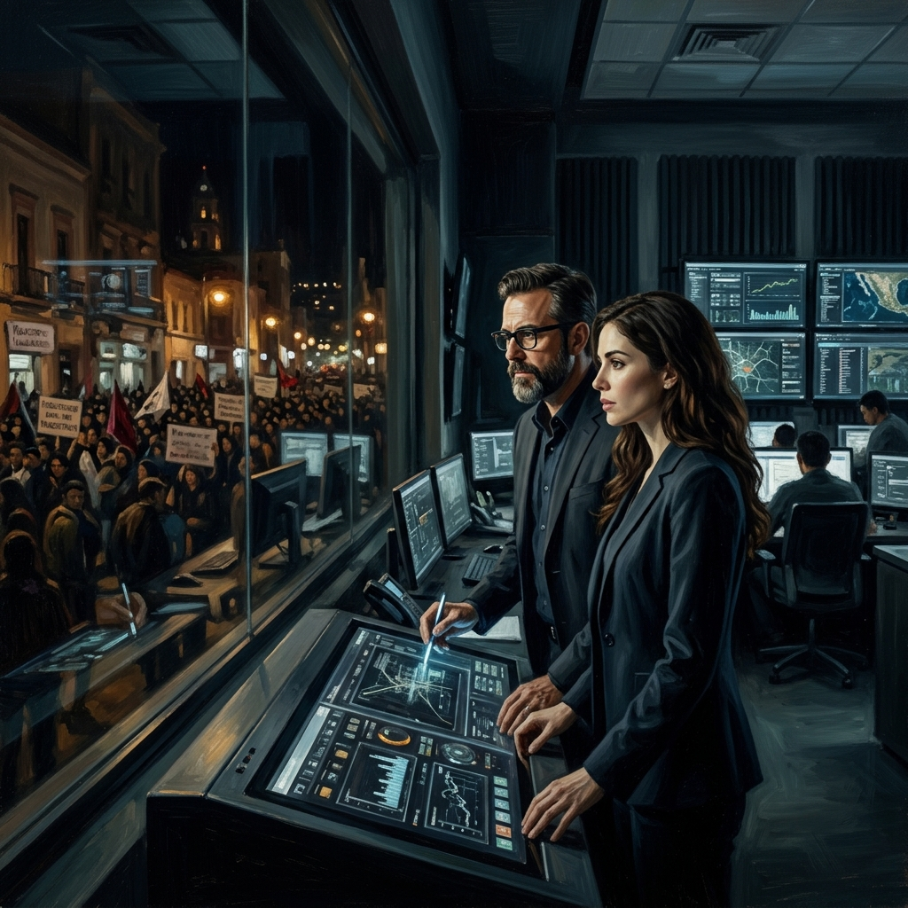
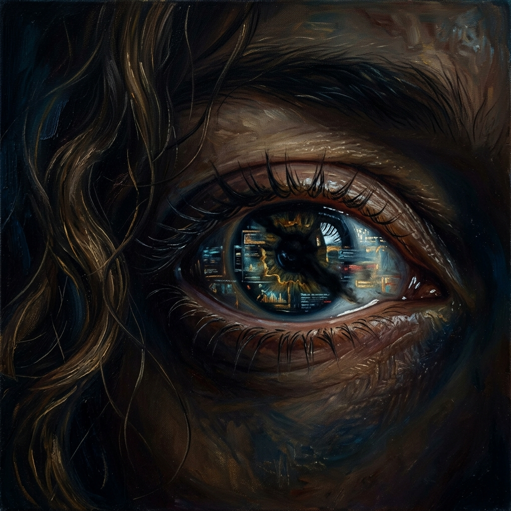
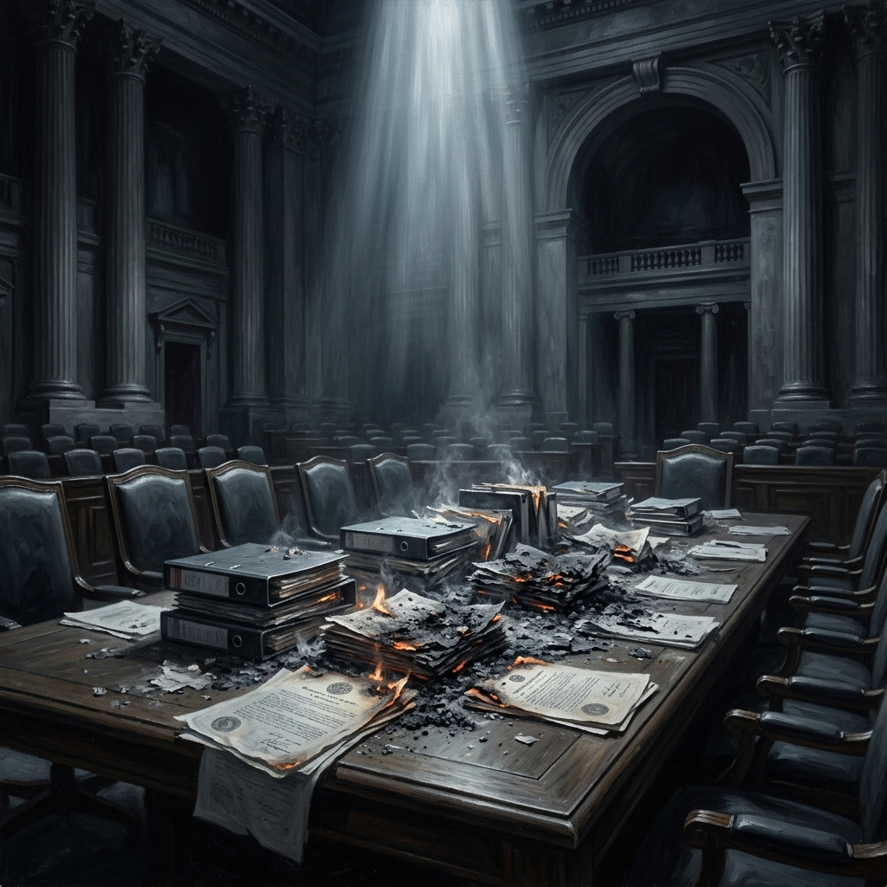
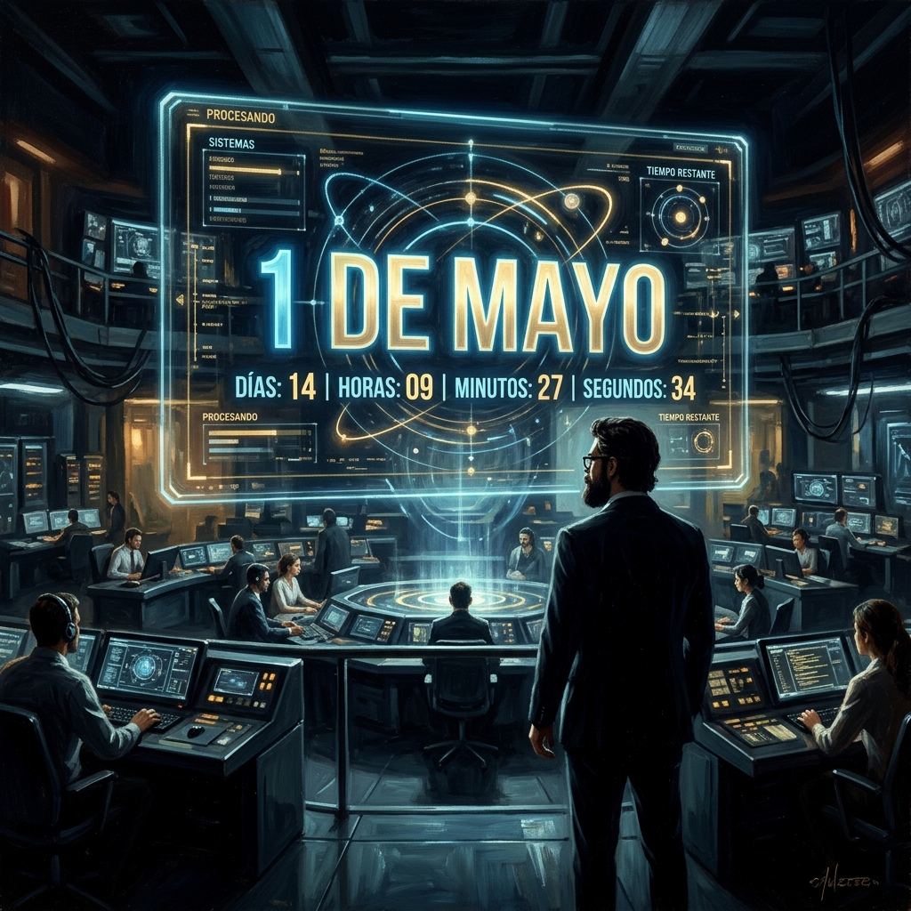
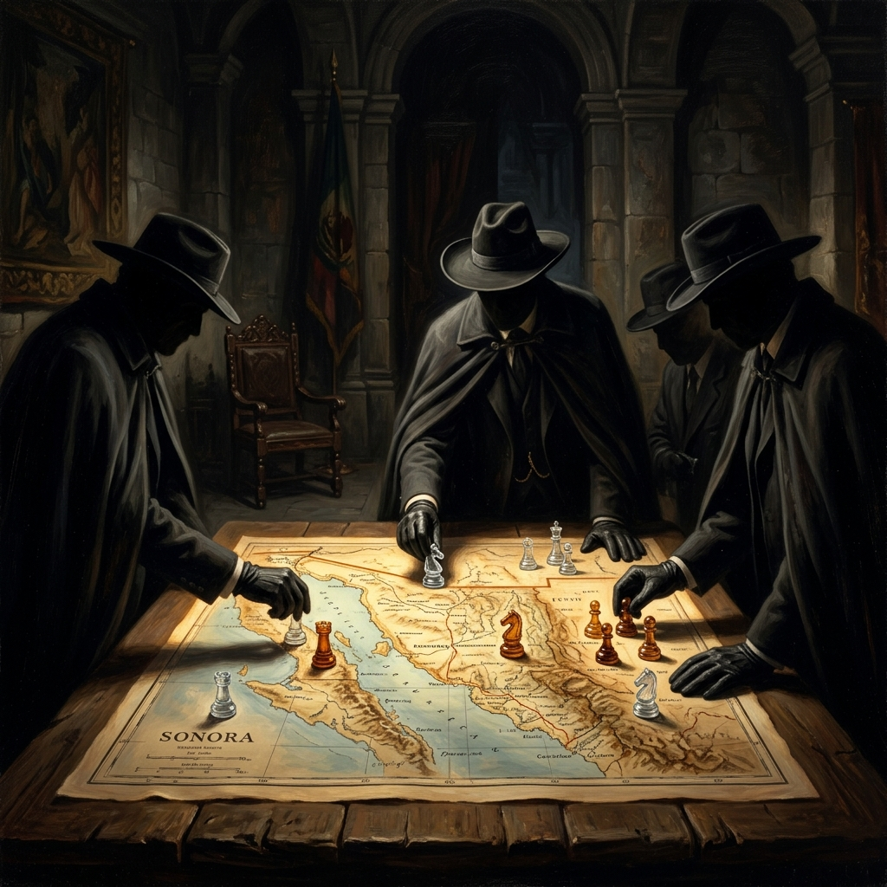
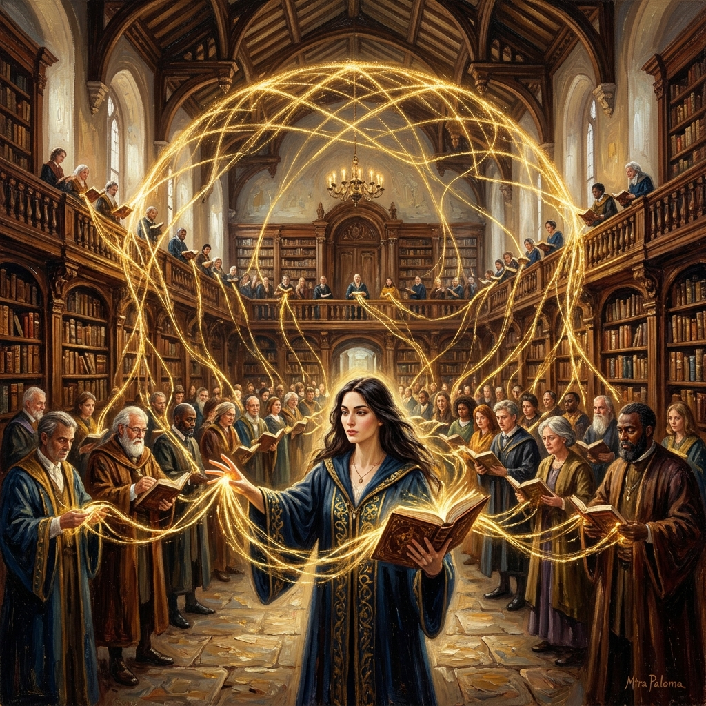
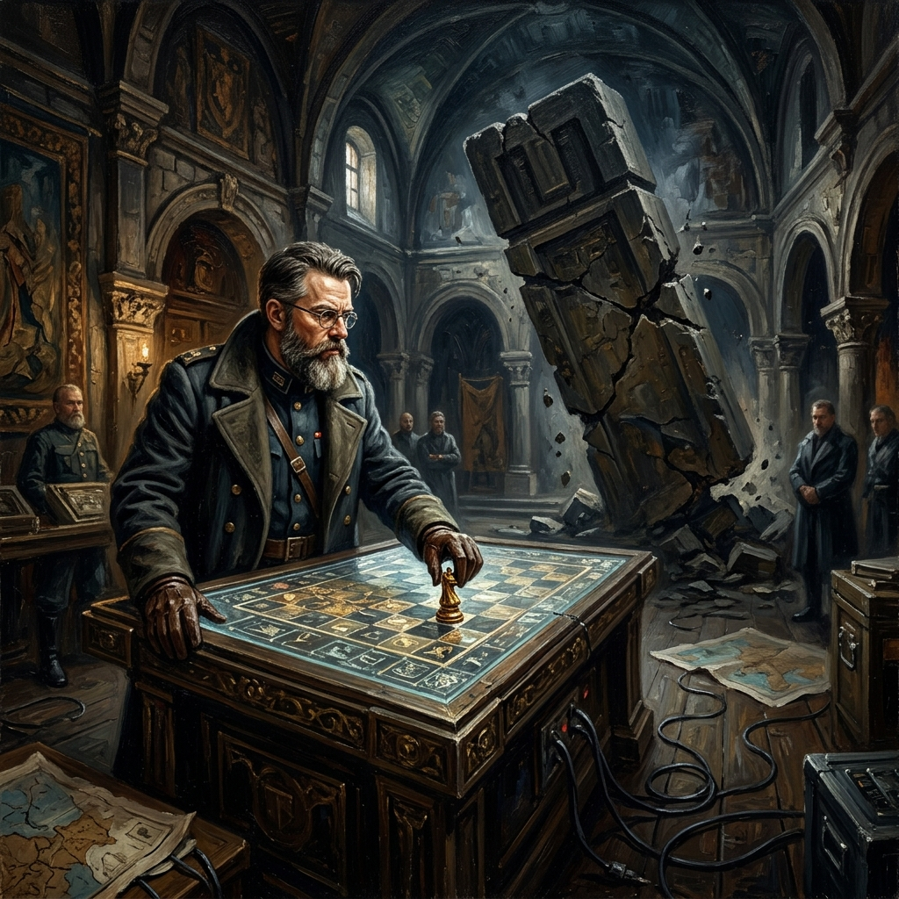
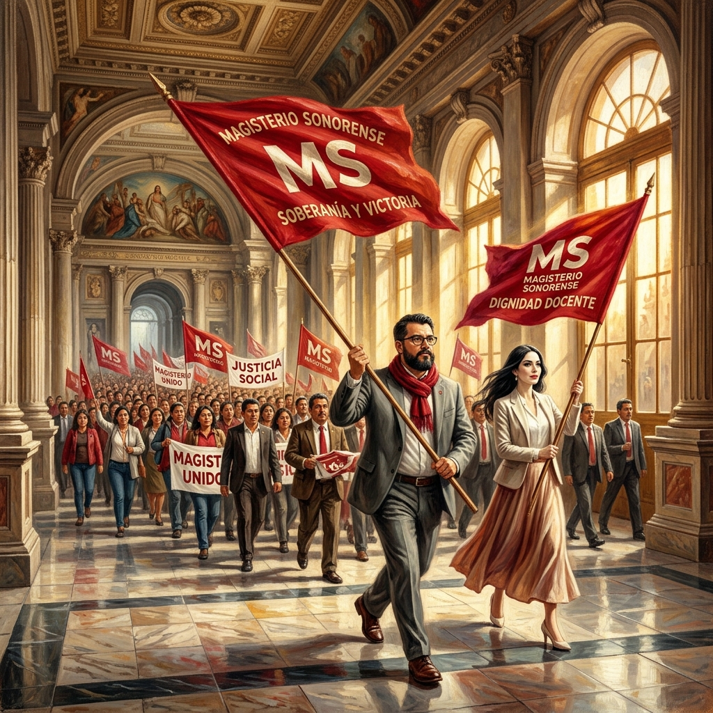
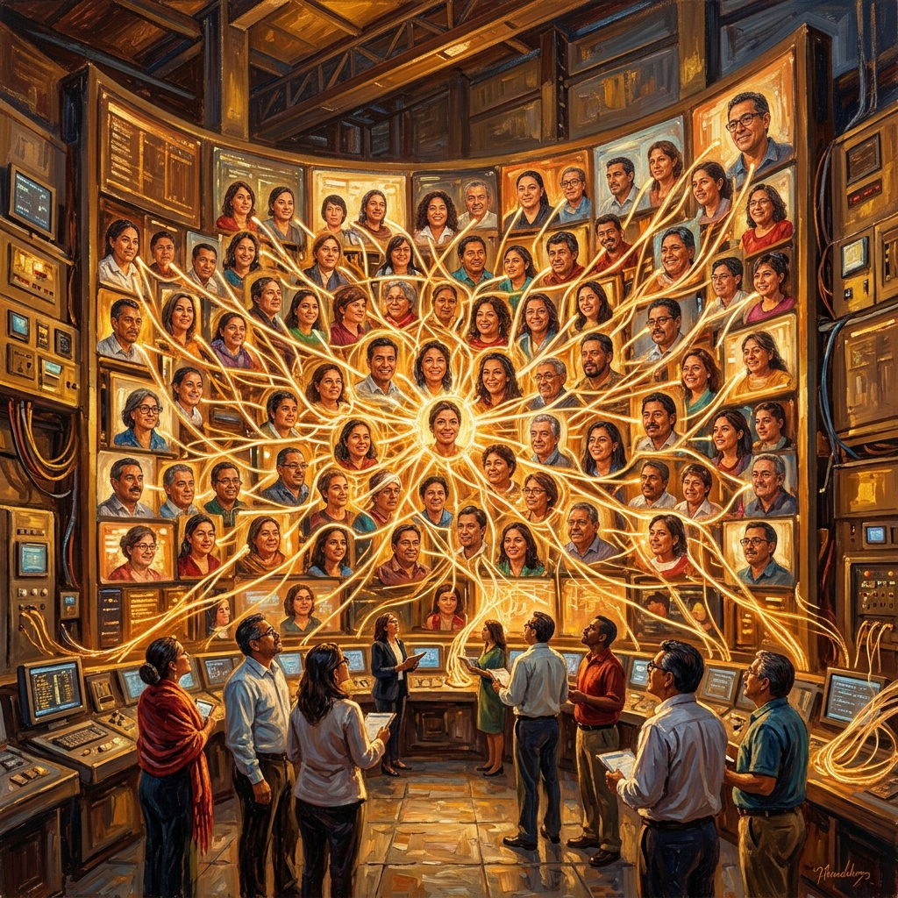
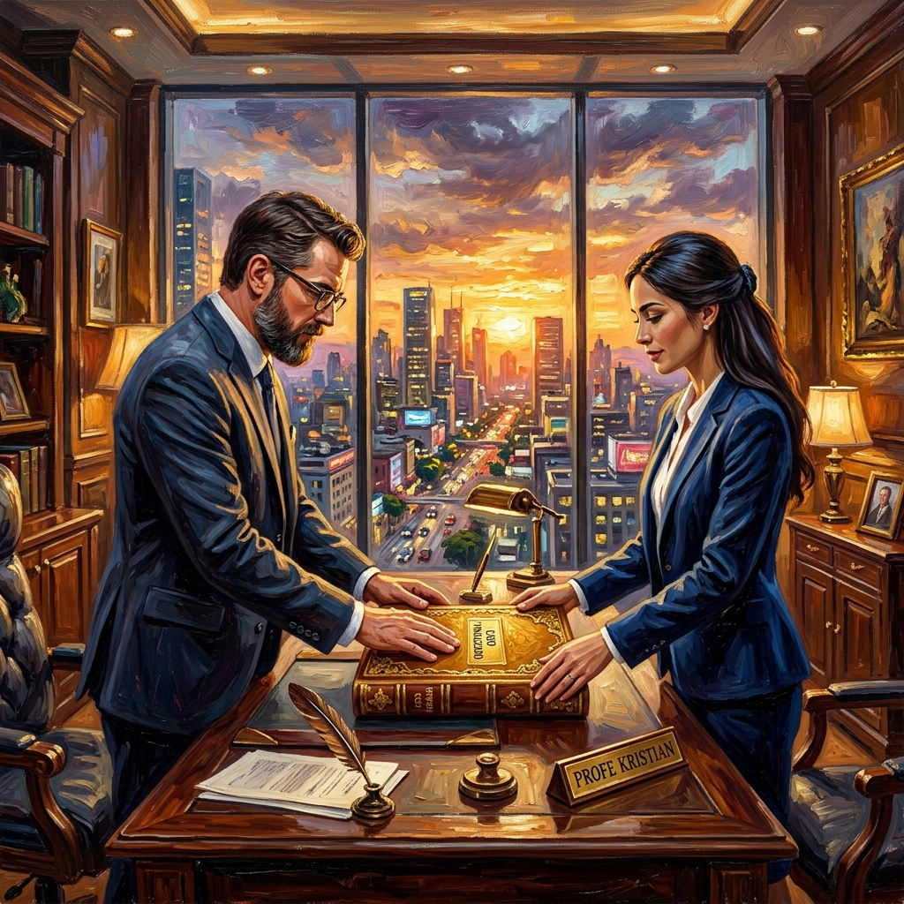

El Espejo de Zacatecas y la Credibilidad del Movimiento
El Profesor Jiang Xueqin nos advierte: "Aquel que ignora el error del aliado está condenado a repetirlo como tragedia". Zacatecas no es una derrota; es un laboratorio de lo que el Magisterio Sonorense (MS) NO debe hacer. Este tomo es un manual de supervivencia táctica frente a la Guerra de Desgaste, diseñado para que la base abra los ojos ante los anti-patrones de negociación que solo benefician a la cúpula. Kristian y Paloma nos guían a través de este análisis de contrainteligencia donde la Asabiyyah (Cohesión) es nuestra única protección contra el olvido oficial.
"La inteligencia es nuestra mejor defensa; la organización, nuestro mayor ataque."
El Espejo Empañado
Zacatecas nos muestra a un magisterio con voluntad pero sin blindaje técnico. Han aceptado el "diálogo" como un fin, no como un medio. Kristian y Paloma analizan el reflejo: lo que vemos en el espejo de la Sección 34 es la parálisis inducida por la agnotología oficial. Si Sonora no afila su propia verdad y expone los desfalcos locales como el FASM28, el espejo se romperá en nuestras propias manos antes del 1 de mayo.
"La ignorancia es el primer candado de la celda sindical."
La Trampa de la "Buena Voluntad"
Sentarse a platicar con quien no tiene poder de firma es caer en una "celda de ignorancia". El Gobierno Federal envía amortiguadores (SEP, ISSSTE), no resolutores. En Zacatecas, las bases se desgastan en mesas de trabajo locales que no modifican leyes. En Sonora, la orden es clara: Interlocución Directa o Parálisis Estructural. No somos invitados a la mesa; somos el factor que decide si hay presupuesto para el Estado.
"Sin poder de firma, la mesa es solo un distractor del despojo."
La Falacia de Junio 2026
Fijar el horizonte en junio de 2026 sin hitos de presión intermedios es un suicidio estratégico. Desde la Inducción hacia Atrás (Backward Induction), el Estado ya sabe cuánto tiempo tiene para licuar la rabia docente. El MS no mira a junio; mira al 1 de Mayo como el Punto de Inflexión No-Retornable. El tiempo debe jugar a nuestro favor mediante la presión constante, no al de ellos mediante la espera pasiva.
"Cada día de espera es un día de ganancia para la opacidad."
Los Charros y el Juego del Desgaste
Los "charros" de la Sección 28 observan con deleite el modelo de Zacatecas. Su función es "prometer para no cumplir", actuando como gestores del cansancio masivo. Debemos exponer este juego: cada mesa de trabajo que no incluye una auditoría forense es una victoria para el charrismo corporativo. Es hora de romper su matriz de pagos elevando el costo de su traición en redes y plazas.
"El charro se alimenta del silencio de la base; Sonora ha decidido gritar la verdad."
Asabiyyah: El Escudo de Sonora
Ibn Jaldún hablaba de la Asabiyyah como la cohesión social profunda. En Zacatecas, el escepticismo ("a la mera hora no harán nada") está rompiendo esa unión. En Sonora, blindamos la credibilidad mediante la transparencia. La consulta a las bases es nuestro Contrato Social Horizontal: no dependemos de un líder corruptible, sino de una red distribuida de maestros informados que no acepta migajas.
"Tu firma en la consulta es un juramento de blindaje contra la traición."
La Ley de la Asimetría Aplicada
No ganaremos por ser más fuertes, sino por ser menos predecibles. El Gobierno espera marchas tradicionales; no esperan que cada coordinador tenga el Dossier Jurídico bajo el brazo y datos de la ASF en tiempo real. La Ley de la Asimetría dicta que el jugador débil vence cuando altera la percepción del riesgo del oponente. Hagamos que el Estado tema más a nuestra inteligencia técnica que a nuestro número.
"La técnica es el arma secreta del maestro en el tablero de cristal."La Alternativa Técnica (PIP)
El error crítico en Zacatecas es decir "No a la reforma" sin proponer el "Cómo sí". El MS lleva el Arsenal de la Decisión: la Pensión Intergeneracional Protegida (PIP). Mientras ellos gritan consignas vacías, nosotros legislamos desde la base con propuestas técnicas irrebatibles que el Gobierno no puede ignorar sin admitir su propia incompetencia financiera. La propuesta es nuestra mayor fuerza.
"La rebeldía más absoluta es tener la solución que ellos ocultan."
El 1 de Mayo: Punto de No-Retorno
No vamos a una marcha de aniversario; vamos a una demostración de soberanía magisterial. El 1 de Mayo es el disparador del nuevo Equilibrio de Nash en Sonora. El Estado debe entender, mediante nuestra presencia masiva e informada, que Sonora no es negociable tras esa fecha. Es el momento en que el Gobierno debe decidir si choca de frente contra la realidad o cede ante la justicia docente.
"Cruzar la línea del 1 de mayo significa que ya no hay vuelta atrás."
El Contrato Social Horizontal
Zacatecas nos enseña que el poder que viene de arriba hacia abajo se corrompe en el camino. El MS construye poder de abajo hacia arriba. Cada firma, cada grupo de WhatsApp y cada brigada es un nodo de Asabiyyah. No dependemos de un comité que pueda ser "comprado" o "doblado"; dependemos de una red de inteligencia docente que no tiene cabeza que cortar porque la cabeza es la base misma.
"El sistema no puede decapitar a un movimiento que no tiene cúpula."
Jaque Mate al Olvido
Zacatecas será el espejo donde vimos el abismo y decidimos volar por encima de él. El Tomo XVIII se cierra con un grito de guerra estratégico grabado en la memoria del desierto. El Jaque Mate no es solo una victoria administrativa o salarial; es una victoria existencial sobre el sistema de ignorancia que nos mantenía dóciles. Sonora despierta, y con ella, la verdad magisterial ilumina todo México.
"Jaque Mate, Sonora. El tablero ahora es nuestro." CERRAR TOMO XVIII